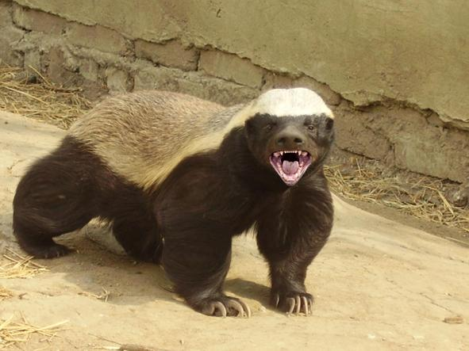

Zebra

Zebra – ssak z rodziny koniowatych charakteryzujący się obecnością białych pasów na czarnej sierści.
Zwierzęta te należą do rodzaju koń. Do zebr zalicza się zwykle trzy gatunki z licznymi podgatunkami:
-zebra stepowa
-zebra równikowa
-zebra sawannowa
-zebra damarska
-zebra pręgonoga
-zebra równinna
-zebra kwagga.
Ratel miodożerny
Ratel miodożerny - znany też jako miodożer lub borsuk miodowy (Mellivora capensis), to drapieżny ssak z rodziny łasicowatych, zamieszkujący Afrykę,
południową Azję i Półwysep Arabski. Ma masywną sylwetkę, krótkie nogi i charakterystyczne, czarno-białe umaszczenie – grzbiet i głowa są jasnoszare,
a boki i brzuch czarne. Jest niezwykle odważny i agresywny, często stawia czoła znacznie większym przeciwnikom, jak lwy czy hieny.
Jak sama nazwa wskazuje, uwielbia miód – potrafi współpracować z ptakiem zwanym przewodnikiem miodnym, który prowadzi go do gniazd pszczół.
Poza tym żywi się również owadami, gryzoniami, gadami (nawet jadowitymi wężami) i padliną. Ratel słynie z niesamowitej odporności na jad i bardzo
grubej skóry, która chroni go przed ugryzieniami i ukąszeniami.